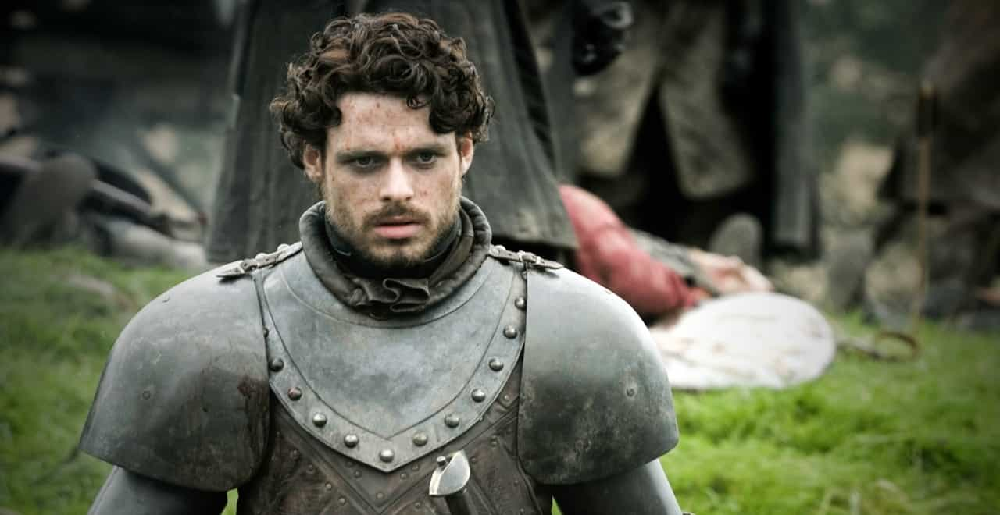

< < < Back
Game Of Thrones Reminds Us How Monogamy Can Harm Your Masculinity – Return Of Kings
Game of Thrones (GoT). The ultimate blockbuster of the present decade. During its episodes we laughed, we cried, we felt excitement, jealousy, arousal and joy. We experienced all these feelings that make a TV show addictive and creates the love-hate connection every aspiring Golden Globe Director wants to achieve.
But most of all, as men we identified ourselves with specific characters. In their faces we found idols, mentors and heroes. Their behaviors and choices made us realize what type of men we are closely related to and how these choices and behaviors can bring you from the bottom to the top and vice versa.
This article is about my desire to analyze three of the most influential GoT male characters and unravel the mystery behind their seductive personas. Behind each character hides a powerful person that tries unapologetically to balance between his dark side and his will for apollonian mastery. These two sides of the same coin are explicitly related to each other and are constantly trying to win the battle over the character’s consciousness.
Sometimes this battle works in the character’s favor and helps him find his way towards glory and immortality, but some times it can have devastating results for him and his surroundings.
Robb Stark

The King of the North. The predecessor of a dynasty. The only true hope that is left in Westeros. Robb Stark is exactly like his father. Proud, stubborn and with wrong judgment. Despite his intellect and great strategic skills, he lacks social intelligence and the ability to make the right alliances. He thinks that because he is the King of the North and he has a single uncle, he can exchange that for House Frey’s help. Wrong!
What distinguishes a great man from a Quintessential Man is his ability to make right choices during chaotic times. He needs to be antifragile. Unfortunately, Robb Stark was blinded by his desire for vengeance and didn’t make the right decisions. Decisions that will most probably lead to the end of a dynasty.
Moreover, Robb, despite being young, good-looking and a King, decides to fall in love with a nurse. Most probably because she is the only woman that can match his emotional character.
I have nothing against falling in love because of emotional reasons but let’s be serious for a moment. You are in the middle of the most important war of your life. You give your word to a stupid old man that you will marry his daughter because you need his help. And you just break your word because you fell in love? Fail.
Robb Stark wasn’t born in the right time. He would have been a great King if he were born in a Lord-of-the-rings-type-elvish-Kingdom, where everything is predictable and no one annoys the elves. In Westeros unfortunately, things are way crueler.
Tyrion Lannister
Tyrion makes great use of his intelligence as a tradeoff for his ugly looks. He has extremely high levels of social intelligence and he uses his language in an exceptional way. He is a good-hearted libertine who constantly challenges the status quo and desperately tries to find the reasoning behind humanity’s brutal nature.
His purpose is to find a role in King’s Landing and successfully does so by being assigned the role of the Hand of the King. Despite his constant controversy with his nephew and the never-ending insults by the luminaries surrounding him, his charming persona attracts the right allies.
He finds an ally in the face of two of the most heroic characters in the series—His brother Jamie and Prince Oberyl Martell. In the end, unfortunately for him, he cannot stand the insults anymore and loses his temper, thus resulting to him being accused of his nephew’s murder.
Tyrion is a womanizer like most of GoT male characters, but for some reason he has a huge weakness for whores. One of them, Shae, becomes obsessed over him and wants to force him into a monogamous relationship. She finds it difficult to understand the implications of such an event and despite Tyrion’s thoughtful attempts to save her, she refuses to compromise. This results to her being blinded by jealousy and vengefully tries to accuse him of rape and mistreatment. Apart from that, she goes a step further and finds a new lover/protector in the face of his father Tywin. We all know how that ends.
Tyrion is one of my favorite dramatic characters in the series because he represents the typical guy who despite his intelligence, is so self-conscious about his looks that he falls into the trap of falling in love with the first woman that shows real interest in him.
Khal Drogo
The ultimate Warrior. The Quintessential Alpha Male. The embodiment of testosterone. He is strong, cunning, intelligent and ruthless. Everyone respects him and everyone fears him. He has no fear of death and his every action is accompanied by a brutal ending.
His only weakness? Love.
It is very difficult not to fall in love with the mother of dragons. This amazingly beautiful creature that balances sexuality and cuteness in an exceptional way. But come on, when you are the leader of a bloodthirsting tribe of warriors, love is a word that does not exist in your vocabulary.
As we all know, love can make you blind and dictate some of your most thoughtless actions. This is exactly what happened to Khal Drogo. He decided to take a break from his brutal reality and step down and enjoy the fruit of monogamy. This comes with a price. The moment you decide to commit yourself to a monogamous relationship, “me” becomes “we” and strength usually becomes a weakness.
Khal Drogo’s brutal strategy served him well until he decided to let Danaerys influence him. He made decisions based on emotion and not on logic (his logic at least). His decision to save some slaves instead of killing them, simply to please his wife, leads to unintended consequences. By breaking the bro code, he pisses off one of his most skillful warriors, who challenges him to a battle. Obviously Khal destroys him but one of the hits wounds him heavily. Danearys asks him to accept help from a witch she trusts and in return she vengefully infects him and he soon worsens to the point of death.
Despite his brutal nature, Drogo represented everything we want to see in an alpha male. He changed his way just to please his wife. He paid the consequences.
Read More: Who Is The Biggest Alpha Male On Game Of Thrones?